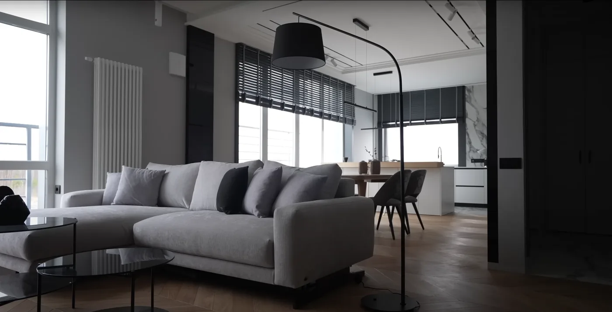
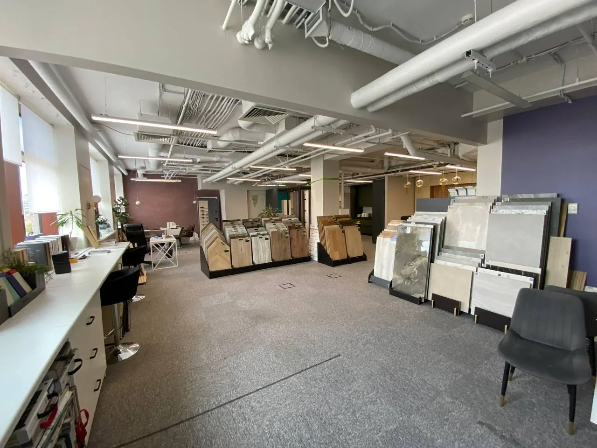

Ремонт в новостройке
20–35 тыс. ₽за м² · работы
- Перегородки и зонирование по проекту
- Подготовка пола, стен и потолка
- Электрика и сантехнические работы
- Финишная отделка
Москва и Московская область
Один подрядчик на весь ремонт — от подготовки квартиры и инженерных работ до чистовой отделки и комплектации.
Выезд инженера и замер — бесплатно

Ремонт и стоимость
Площадь, состояние квартиры и уровень отделки определяют бюджет. Сравните состав работ и ориентиры стоимости.
Ориентиры Larsson для квартиры 60 м². Материалы, дизайн-проект и комплектация рассчитываются отдельно. Точная стоимость и сроки — после замера и согласования состава работ.
Стоимость ремонта
Выберите параметры квартиры, чтобы увидеть предварительный ориентир. Для подробной сметы запишитесь на бесплатный замер.
Состав работ
Когда за всю квартиру отвечает одна команда, вам проще планировать переезд. На замере разберём, какой вы хотите видеть каждую комнату, и составим смету от подготовки стен до установки последнего светильника.
Замеряем помещения и обсуждаем, где будут стоять мебель, техника и сантехника.
Составляем смету по помещениям и согласуем состав работ, материалы и очередность закупок.
Готовим основания, прокладываем коммуникации, укладываем покрытия и устанавливаем сантехнику.
Вместе с прорабом вы принимаете выполненные этапы и проверяете готовую квартиру.
Портфолио
Фотографии завершённых объектов Larsson. Откройте проект, чтобы рассмотреть отделку, свет и детали.
Как работаем
До начала работ согласуем состав ремонта, бюджет и план-график. Прораб организует работы на объекте.
Уточняем состояние квартиры, пожелания по отделке и ориентир по бюджету. Если есть дизайн-проект, изучаем его.
Инженер осматривает квартиру и составляет перечень необходимых работ.
Определяем объём работ, материалы и план-график. Дополнительные работы оформляем отдельным соглашением.
Прораб организует ремонт. Вы принимаете и оплачиваете выполненные этапы.
До начала ремонта
Обсудите детали вашей квартиры со специалистом.
На замере скажите, какие материалы уже куплены и что хотите выбрать самостоятельно. В смете можно увидеть отдельно работы и материалы, чтобы понять, из чего складывается бюджет.
План кухни стоит подготовить до разводки электрики и воды. Тогда розетки, выводы под мойку и посудомоечную машину окажутся там, где их ждёт установщик.
Для расчёта нужны площадь, исходное состояние квартиры и состав работ. После замера обсуждаем график по этапам, включая подготовку оснований и время на доставку чистовых материалов.

Приходите знакомиться
Посмотрите материалы вживую, задайте вопросы инженеру и расскажите, каким вы видите будущий интерьер.
Москва, бульвар Энтузиастов, 2Ежедневно с 9:00 до 22:00